Generadas por report/make_figures.py a partir de results/ y checkpoints/. Cada una trae una explicación de cómo leerla.
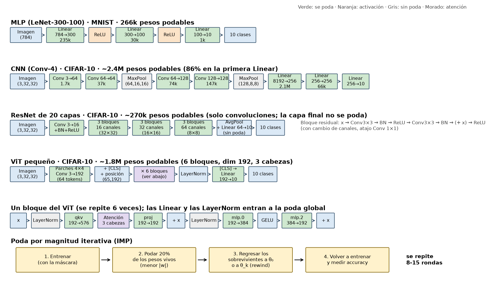
Cómo leerla. Las cuatro redes con la forma de los tensores y los pesos podables por capa (verde = capas que se podan). Abajo, el ciclo de IMP: entrenar, podar el menor |w|, regresar los sobrevivientes al punto de referencia y volver a entrenar.
arch.pdf
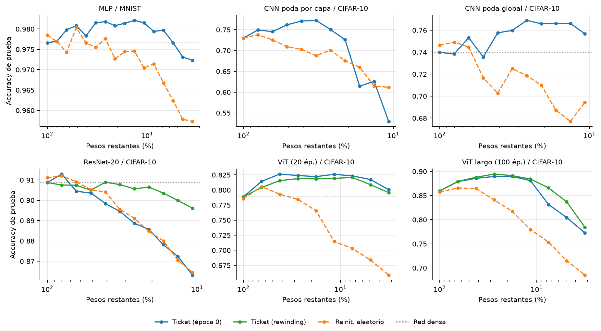
Cómo leerla. Cada panel es una arquitectura. Eje x: % de pesos que quedan (log, invertido: la red se hace más pequeña hacia la derecha). Si la curva azul se mantiene arriba y la naranja cae, el ticket funciona; si ambas caen igual, solo importaba la estructura.
curves.pdf
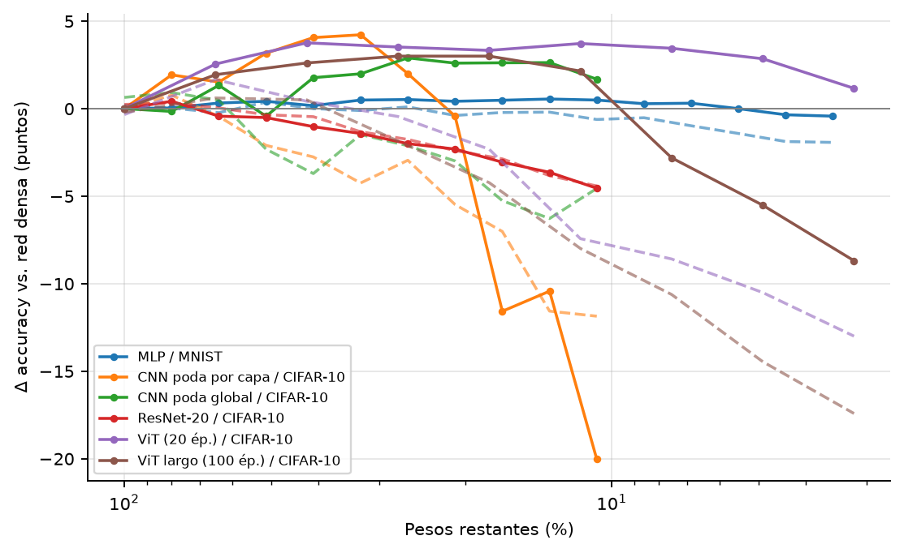
Cómo leerla. A cada curva se le resta la accuracy de su red densa, para comparar arquitecturas con bases distintas. 0 = la subred iguala a la completa; arriba de 0 = la supera. Línea continua: ticket; punteada: control aleatorio.
delta.pdf
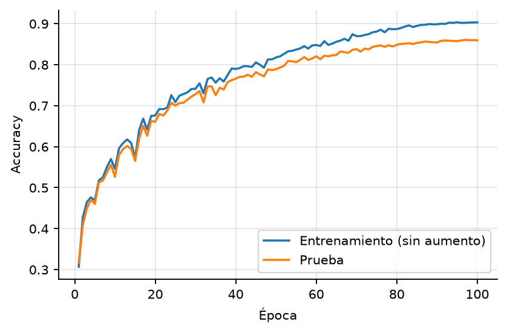
Cómo leerla. Accuracy de entrenamiento (sin aumento de datos) y de prueba por época. Una brecha pequeña con la prueba todavía subiendo indica un modelo no fuertemente sobreajustado, es decir, un baseline razonable para comparar el ticket.
vit_dense.pdf
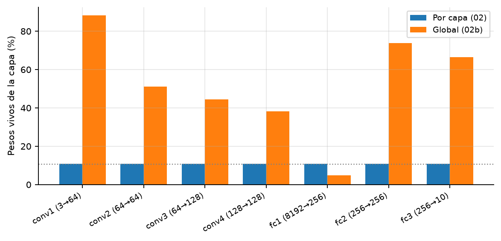
Cómo leerla. Fracción de pesos vivos de cada capa en el ticket con 10.7% de los pesos totales (línea punteada). Con poda por capa todas las barras quedan en ~10.7%, incluso las capas diminutas (conv1 pasa de 1,728 a 188 pesos). Con poda global las capas pequeñas casi no se podan y fc1 absorbe la mayor parte de la poda.
cnn_layers.pdf
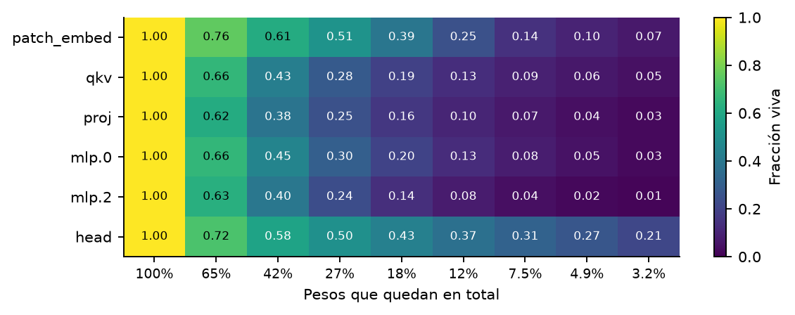
Cómo leerla. Para cada tipo de capa (promedio ponderado sobre los 6 bloques) y cada ronda, la fracción de pesos que sobrevive. Con poda global las capas no pierden parejo: las filas se separan. Una capa que se oscurece rápido es una capa cuyos pesos son pequeños en comparación con el resto de la red.
heat.pdf
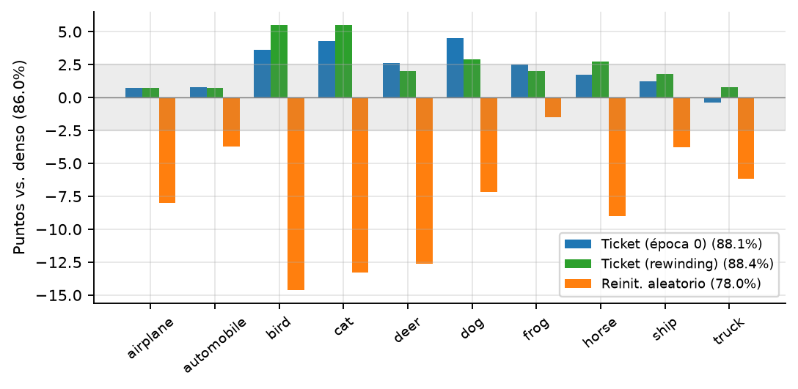
Cómo leerla. Diferencia (en puntos) entre cada modelo podado y el denso, por clase, con 11.6% de los pesos. La banda gris (±2.5 puntos) es el ruido estadístico de 1,000 imágenes por clase: lo que cae dentro no se interpreta.
cls.pdf
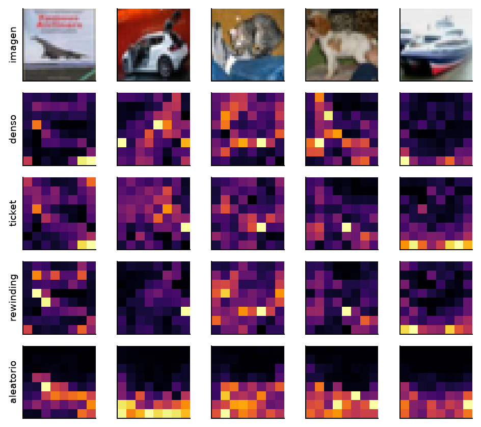
Cómo leerla. Atención del token [CLS] hacia los 64 parches (8×8) en el último bloque, promediada sobre las 3 cabezas, para 5 imágenes de prueba (columnas). Cada fila es un modelo con 11.6% de los pesos; 'aleatorio' tiene la misma máscara que el ticket con otra inicialización. Más brillante = más atención. Es una pista de dónde mira el modelo, no una explicación de su decisión.
attn.pdf
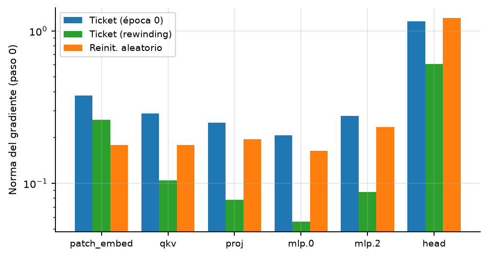
Cómo leerla. Norma del gradiente de la pérdida sobre los pesos vivos, por tipo de capa, antes de entrenar (eje logarítmico). Compara la misma capa entre modelos, no capas distintas, porque la norma crece con el número de pesos.
grad.pdf
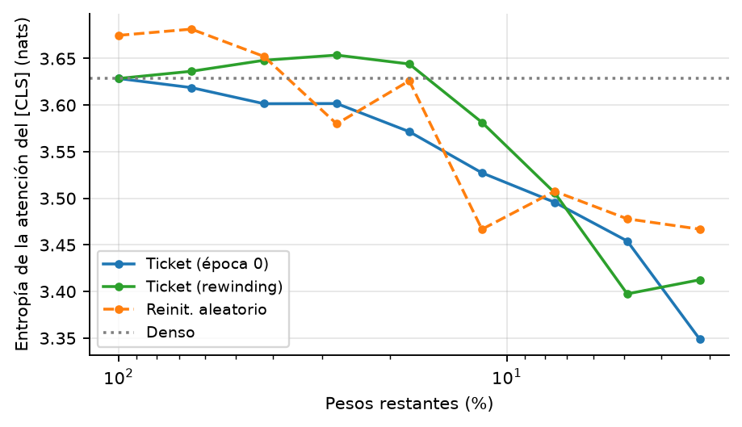
Cómo leerla. Entropía de la fila del [CLS] (65 llaves), promediada sobre 256 imágenes, cabezas y bloques. Máxima (ln 65 ≈ 4.17) = atención uniforme; cercana a 0 = una sola llave. Si cambia al podar, las cabezas están cambiando de comportamiento; no dice si la atención es correcta.
entropy.pdf
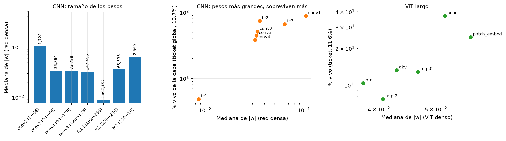
Cómo leerla. Panel izquierdo: mediana de |w| por capa en la CNN densa entrenada (eje log; el tamaño de la capa está sobre cada barra). Panel central: mediana de |w| contra el porcentaje de pesos vivos de esa capa en el ticket global de la CNN (10.7% del total): las capas con pesos grandes (pocas entradas por neurona) sobreviven más. Panel derecho: lo mismo para el ViT largo (11.6% del total); la relación también es positiva (head y patch_embed tienen los pesos más grandes y sobreviven más), pero es menos limpia porque las magnitudes cambian durante las rondas de IMP y aquí se usan las del modelo denso.
magnitudes.pdf